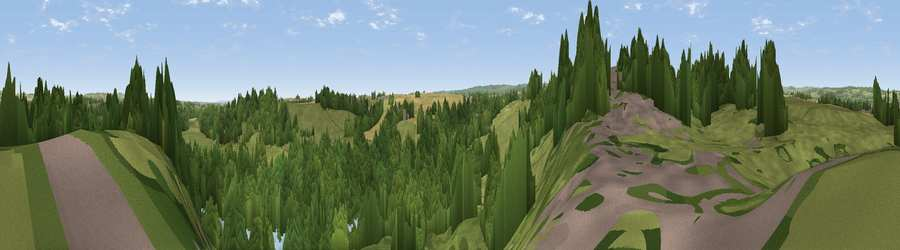

Viewpoint near Winston
#35850 in England · top 86% of its area beats it · near WinstonThe view, rendered

A 360° render of this exact spot computed from the terrain model, tree cover and land cover — summer colours, afternoon light, calibrated against photographs of famous viewpoints. Real trees, hedges and buildings will differ in detail.
The panorama
Grey silhouette: terrain skyline in each direction (720 bearings, Earth curvature and refraction included). Dashed green: skyline with trees (+15 m) and buildings (+8 m) as obstacles. Blue strip: how far the ground is visible on each bearing.
Where the view opens
Wedge length = distance to the farthest visible ground on that bearing (vegetation-aware). Rings at 10, 25 and 50 km.
What fills the view
51% woodland · 34% grassland · 8% cropland · 5% water · 2% built-up
Angular shares of the visible panorama (visual magnitude), not map area. Landscape diversity 0.50 (0–1 Shannon).
Key numbers
More beautiful places nearby
The staircase of upgrades: each row has a higher view potential than everything closer. Driving times are estimates from straight-line distance, calibrated against real road routing — check an actual route before setting out.
| Place | Direction | Drive | Score |
|---|---|---|---|
| Viewpoint near Winston | ESE · 1 km | ~2 min | 46.5 |
| Viewpoint near Whorlton | W · 3 km | ~7 min | 64.1 |
| Diddersley Hill | SSE · 9 km | ~19 min | 67.3 |
| Viewpoint near St Helen Auckland | NE · 10 km | ~19 min | 70.3 |
| Viewpoint near Gilling West | S · 12 km | ~23 min | 72.3 |
| Viewpoint near Barningham | SW · 14 km | ~25 min | 72.7 |
| Viewpoint near Barningham | SW · 14 km | ~26 min | 74.1 |
| Viewpoint near Eggleston | WNW · 15 km | ~26 min | 76.0 |
54.54663, -1.78051 · source: osm viewpoint · position refined by local search. Computed location — check access rights before visiting.